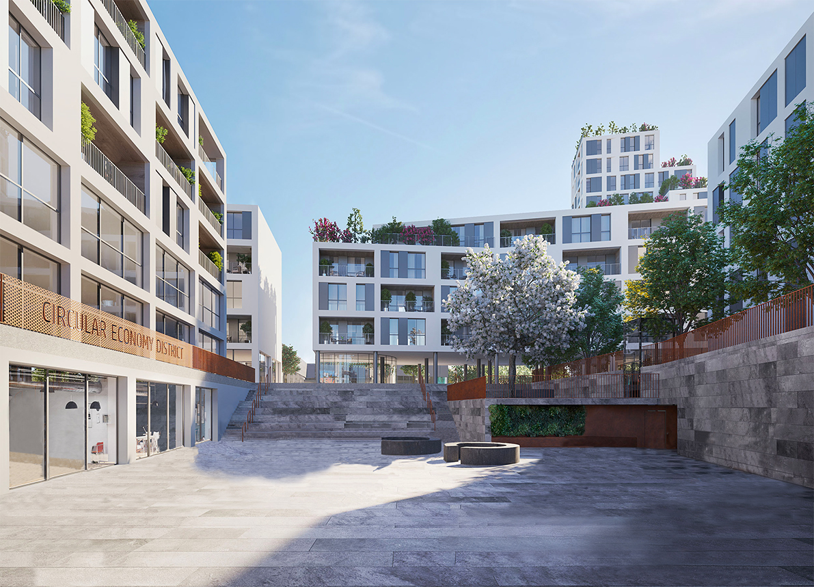
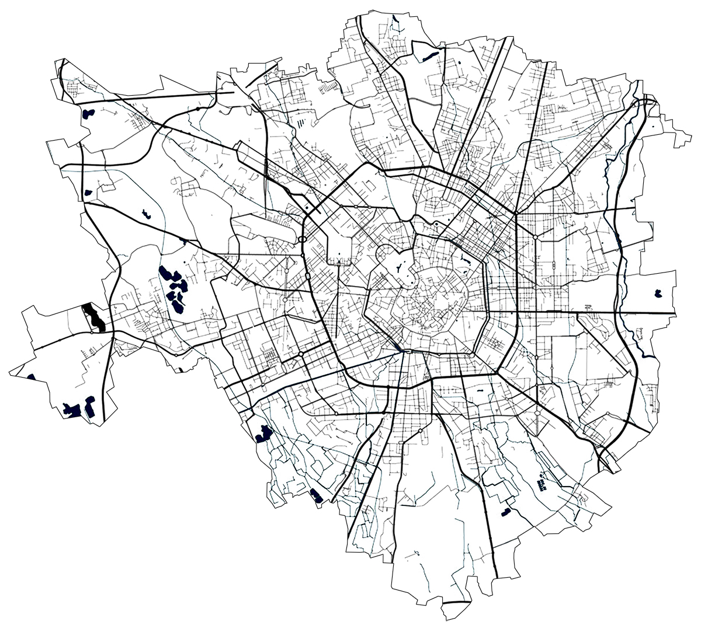

When looking at architecture projects, people usually focus on the architecture itself, wondering how the city will change. Will it be smarter?
Will it be greener? Typecasting tries to answer the same questions, but shifting the focus on something that usually goes unnoticed in architecture renders: the people.
What kind of people inhabit the city of the future? What do they look like? What do they do? To answer that, we analyzed people in architecture renderings about future projects in
Milan and divided them into different clichés, inviting you to take a look at what the city of the future will look like.
Why clichés? As the name of our project suggests, we took the approach of movie producers, typecasting the people of tomorrow’s society based on the roles they play inside of the renders.
By doing this we wanted to shed a light on the different “parts” people will play in the future according to renders.
Why focusing on people? The society is an integral part of the render, showing people living their lives inside of a project helps to bring it to life.
However, people in renders are unlikely to be the focus of the attention, even if you would surely notice if they were missing.
The aim of our project is therefore to bring the focus on these people, the context surrounding the project that helps to communicate the city of the future.
Hover to reveal people


Which projects are included? As of now, Typecasting includes thirteen different projects, both public and private, in the city of Milan.
They were chosen for their communication as “green” projects. All of them are yet to be completed. You can see the projects and where they will stand in the map here below.
MILAN
Aria
Co-Inventing Doria
Green Between
L'Innesto
Lambrate Streaming
Loreto Open Community
Milano City Door
MoLeCoLa
Scalo di Porta Romana
Sei Milano
Torre Botanica
Vitae
